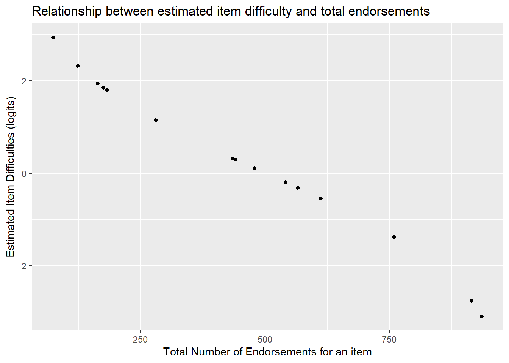

Chapter 6 Optional: Understanding the model
TAM also provides some descriptive statistics.
item_prop <- mod1$itemitem_prop| item | N | M | xsi.item | AXsi_.Cat1 | B.Cat1.Dim1 | |
|---|---|---|---|---|---|---|
| V1 | V1 | 1000 | 0.182 | 1.7930554 | 1.7930554 | 1 |
| V2 | V2 | 1000 | 0.074 | 2.9361446 | 2.9361446 | 1 |
| V3 | V3 | 1000 | 0.175 | 1.8479678 | 1.8479678 | 1 |
| V4 | V4 | 1000 | 0.164 | 1.9375212 | 1.9375212 | 1 |
| V5 | V5 | 1000 | 0.280 | 1.1391729 | 1.1391729 | 1 |
| V6 | V6 | 1000 | 0.566 | -0.3249806 | -0.3249806 | 1 |
| V7 | V7 | 1000 | 0.440 | 0.2916454 | 0.2916454 | 1 |
| V8 | V8 | 1000 | 0.479 | 0.1004197 | 0.1004197 | 1 |
| V9 | V9 | 1000 | 0.435 | 0.3163527 | 0.3163527 | 1 |
| V10 | V10 | 1000 | 0.915 | -2.7690302 | -2.7690302 | 1 |
| V11 | V11 | 1000 | 0.123 | 2.3170294 | 2.3170294 | 1 |
| V12 | V12 | 1000 | 0.760 | -1.3863445 | -1.3863445 | 1 |
| V13 | V13 | 1000 | 0.936 | -3.1003226 | -3.1003226 | 1 |
| V14 | V14 | 1000 | 0.612 | -0.5554452 | -0.5554452 | 1 |
| V15 | V15 | 1000 | 0.541 | -0.2020052 | -0.2020052 | 1 |
Note, the total number of people who answered an item correctly is a sufficient statistic for calculating an item’s difficulty. Said another way, the number of correct answers, or, number of people who endorse a category increases monotonically with the item difficulty (of course, this does not mean you can just replace the Rasch model with a sum score since we’re using the Rasch model to test whether summing items at all is a reasonable thing to do).
To see this, we can find the total number of people who endorsed the “agree” category for each Hls item above. The table provides the proportion who endorsed the higher category in the M column. For instance, item Hls1 had 15.77% of people endorse the “agree” category (1= agree, 0= disagree). In the N column, we see that 317 people answered the item in total.
That means that \(317*.1577\) = 50 people answering the item correctly. Note, the estimated difficulty found in the column is 2.43 logits.
# Confirm that the total number of endorsements (coded 1) is 50 for Hls1: sum down the column containing all answers to Hls1 in the raw data.
apply(hls[1], 2, sum)## V1
## 182However, we see that for item Hls5, 27% of people endorsed that item and the estimated mean item difficulty in xsi.item is 1.50 logits.
The correlation between total number of endorsements per item and the estimated item difficulty can be computed as follows.
# create a column in the item_prop object that has the total number of endorsements for each item
item_prop <- mutate(item_prop, total_endorsed =N*M)
cor(item_prop$xsi.item, item_prop$total_endorsed)## [1] -0.994751We see that the correlation between item difficulties and total endorsements per item is nearly perfect -.97. As the number of endorsements go down, the estimated difficulty of the item increase.
ggplot(item_prop, aes(x=total_endorsed, y=xsi.item)) +
geom_point() +
ylab("Estimated Item Difficulties (logits)") +
xlab("Total Number of Endorsements for an item") +
ggtitle("Relationship between estimated item difficulty and total endorsements")